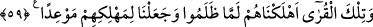

59. İşte şu ülkeler; zulmettikleri zaman onları helâk ettik. Onları helâk etmek
için de belli bir zaman tayin etmiştik.
“İşte şu ülkeler;” Âd, Semûd ve benzerlerini, yâni bu ülkelerin halklarını, Mekke
halkı gibi peygamberi yalanlayarak, hak ile mücâdele ederek ve türlü mâsıyetlerle
“zulmettikleri zaman onları helâk ettik.”
“Lemmâ/zulmettikleri zaman” İbn Usfur’un dediği gibi ya harftir ya da helâkin
sebebini açıklamak için kullanılan bir zarftır. Onunla onların zulmü irtikab ettikleri
belirli bir vakit değildir. Aksine bu, zulmün başlangıcından nihâyetine kadar olan tüm
vakittir.
“Onları helâk etmek için de belli bir zaman tayin etmiştik.” Yâni, helâk
edilmelerine, kendilerinden asla tehir olunmayacak bir süre tanımıştık. İmdi Kureyş
niçin ibret almaz, şirkten ve itâatsizlikten el çekmez. Onlar bilmezler mi ki: “Hoşbaht
kimse başkasının durumundan öğüt alandır.” Reşîdüddîn Vatvat bu kelâm-ı saâdeti
şöyle tercüme etmiştir:
Hoşbaht olan kimsenin gönlü
İyi ve doğru olan şeyi kabul eder
Başkalarına nasihat verilince de
O kimse o nasihatten nasib alır
Yukarıdaki âyetlerde bâzı işaretler vardır:
1- Hidâyet sebeplerinin hepsi bir araya gelse, inâyet cezbeleri olmadan insanlar
onlarla yollarını bulamaz, hidâyete eremez ve îman edemezler. Nitekim Nebî (a.s.)
şöyle buyurmuştur: “Allah olmasaydı ne doğru yolu bulabilir, ne tasadduk eder, ne de
namaz kılardık.”[193]
Molla Câmî der ki:
Sâlikler Dost’un cezbesi olmadan bir yere ulaşamazlar
Bu yolda yıllarca çalışıp çabalasalar da
Hidâyete ermek Allah’ın hidâyete erdirmesi ile ve cihadla olur. Nitekim Nebî (a.s.)
şöyle buyurmuştur: “Ben insanlarla, onlar “Lâ ilâhe illallah/Allah’tan başka ilah
yoktur” deyinceye kadar savaşmakla emrolundum.”[194] Yine o (s.a.) şöyle
buyurmuştur: “Ben kılıç peygamberiyim. (Cihad etmekle emrolundum) Ve ben cenk
peygamberiyim.”[195]
2- Bâtıldan yana olanlar hakkı bâtıl, bâtılı da hak görürler. Bu onların kalb gözlerinin